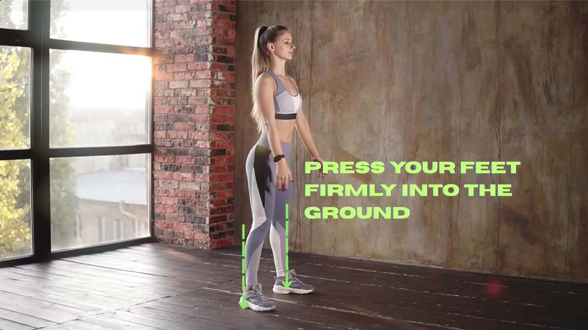
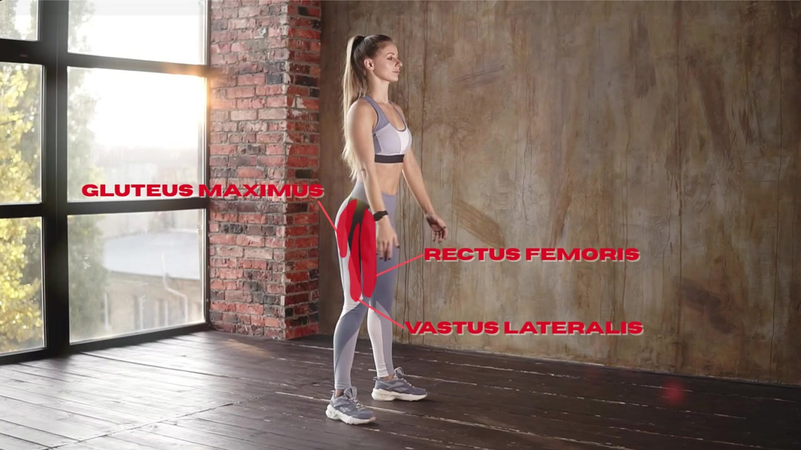
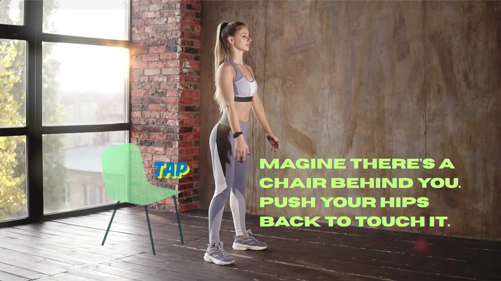
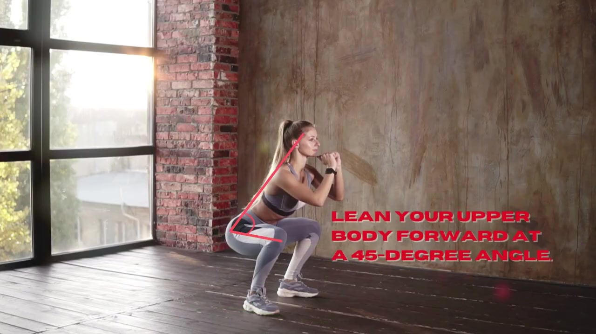
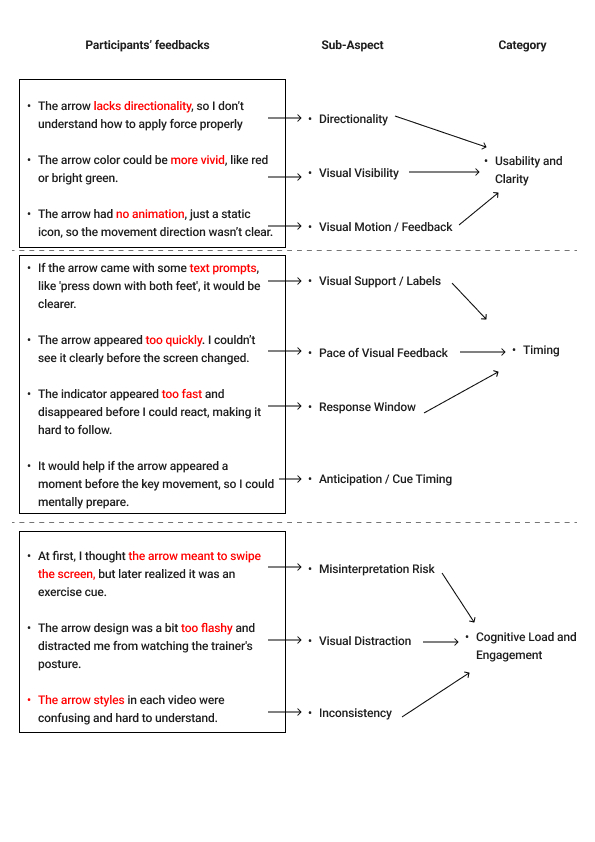
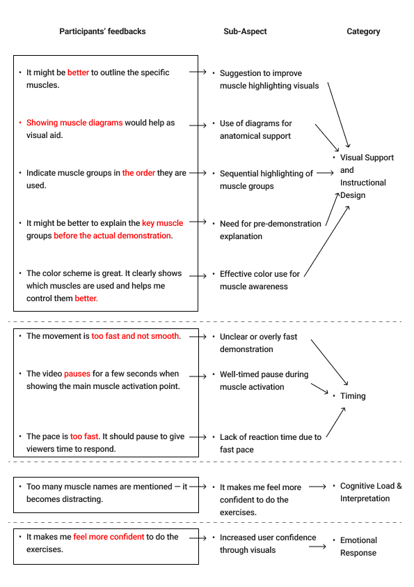
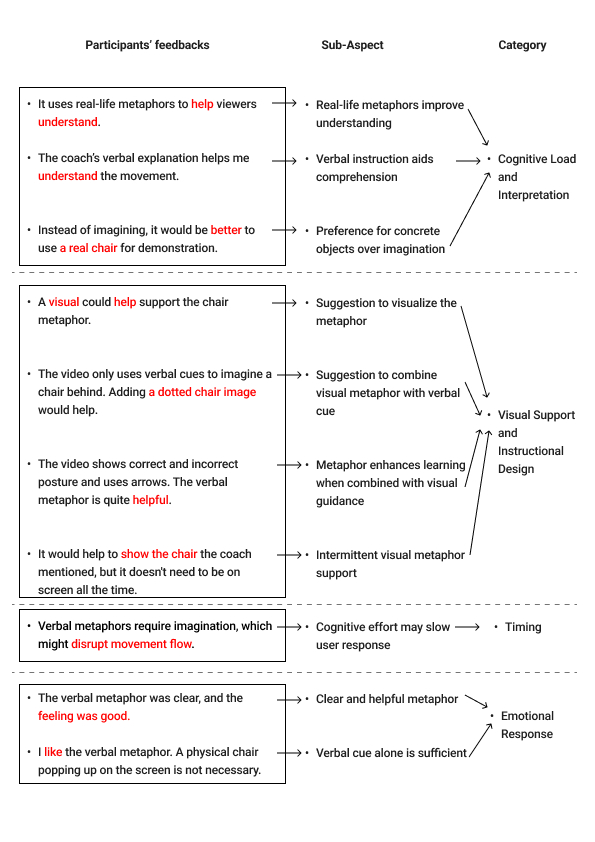
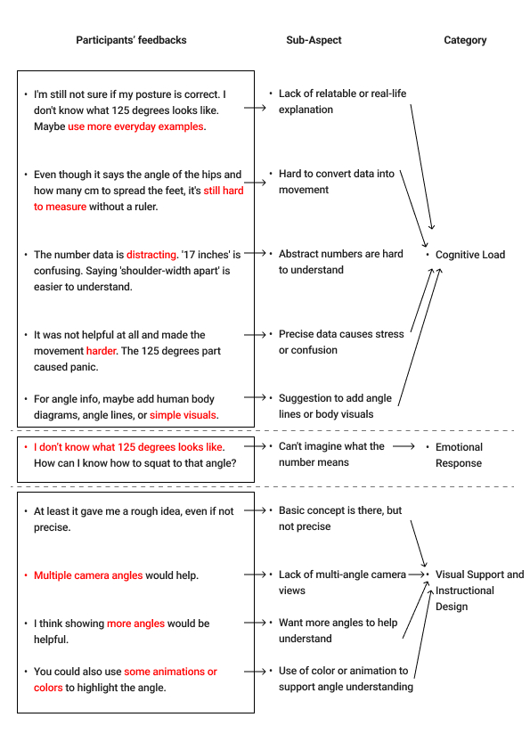

How visual cues in fitness instructional videos affect beginner motor learning — a three-phase mixed-methods study producing an original design framework.
This study investigates how visual cues in fitness instructional videos affect beginners' motor learning. Through a three-phase approach, I evaluated four types of visual cues — directional, measurement, body highlight, and metaphor — across quantitative performance data and qualitative user insights. The study produced an original design framework: the Dynamic Balance Model of Cognitive Load and Learning Effectiveness.
Digital learning has fundamentally changed how beginners approach physical training. Over 70% of users turn to YouTube to learn exercises like squats and stretching. Yet without professional guidance, learners routinely imitate incorrectly — leading to poor form and risk of injury. The deeper problem is systemic: the design of visual cues in existing tutorial videos is driven by intuition and aesthetic preference, not evidence. There are no established guidelines for what works.
Prior research has focused on VR/AR and interactive systems, leaving video-based motor learning systematically underexplored. This study addresses that gap by examining four cue types through the lens of Cognitive Load Theory and the theory of external attention.
How do four types of visual cues — directional, measurement, body highlighting, and metaphorical — support and improve beginner motor learning in instructional videos?
Distributed to fitness beginners aged 18–40 via social media and university networks. The survey mapped learning habits, video-watching behaviour, and initial preferences for six types of visual cues — including skeletal overlays and muscle activation highlights. Participant feedback identified four cue types as the focus for subsequent testing.
Each participant watched four short squat tutorial videos, each embedding a different visual cue type. Performance was observed and recorded. Post-task interviews collected qualitative insights on clarity, helpfulness, and perceived cognitive load. A counterbalanced design controlled for order effects.
Coaches, personal trainers, and experienced exercisers evaluated an optimised video integrating all four cue types. This phase gathered professional validation and critical perspective, allowing cross-comparison between novice and expert responses — which revealed significant differences in how cues are perceived across experience levels.
Most instructional video designs are built on intuition and aesthetic preference, not evidence. This study produced a systematic ranking of the four cue types for beginner motor learning in instructional fitness videos — grounding design decisions in observed data rather than assumption.

Arrows and motion lines that indicate the direction and path of movement. Immediately communicates where the body should go, reducing ambiguity about force and trajectory.
Optimal Zone — Best for beginners
Glow or colour emphasis on specific muscle groups or joints during movement. Draws attention to where activation should occur, supporting body awareness and proprioception.
Useful — Frequency must be controlled
Life-like comparisons that translate abstract movement concepts into familiar imagery — e.g. "sit back into an invisible chair." Relies on prior experience to be decoded correctly.
Expert-first — Novices find harder to interpret
Angle lines, degree markers, and depth indicators overlaid on the body. Provides precise numerical reference but requires abstract interpretation that overwhelms beginners.
Confusing Zone — Precise but overloadingWhat the coding revealed
Provides real-time movement guidance and corrective feedback. Participants found it immediately clear and lowest in cognitive cost — but weak contrast, missing motion, or poor timing could make the arrow feel like UI chrome rather than instruction.
Directs attention to muscle activation and postural control. Useful when timed well; pacing and overuse emerged as key qualitative risks.
Conveys movement via analogy. Intuitive for participants with prior exercise experience — ambiguous and harder to embody for true beginners.
Offers precision and standards, but abstract numbers are hard to translate into physical movement. High cognitive load with limited beginner payoff.
Comparing these roles across the four coding trees — not researcher intuition alone — underpinned the Dynamic Balance Model (learning effectiveness × cognitive load). The quantitative scores in the next section align with these qualitative roles.
Inductive Gioia coding (1st-order concepts → 2nd-order themes → aggregate dimensions) was applied to post-task interview transcripts from beginner usability testing. The analysis ran per cue, producing four comparable coding trees. Staying in participant language before theorising ensured the framework reflected what users said, not what was assumed.
How conclusions were derived
Raw participant quotes tagged with emergent descriptive codes — language stays close to the informant's own words
1st order codes grouped by conceptual similarity into researcher-identified theoretical categories
2nd order themes consolidated into high-level theoretical constructs that explain the underlying phenomenon




These scores align with the qualitative roles above. Scores are Likert mean ratings from post-condition self-report questionnaires (n=10 beginners, Iteration 01 usability testing). Each participant watched all four cue videos in counterbalanced order and rated each immediately after. Effectiveness summarises the Preference dimension from dissertation Table 2; Cognitive Load summarises the self-reported Mental Effort dimension. Full six-dimension data (Usefulness, Clarity, Distraction, Mental Effort, Engagement, Preference) with standard deviations are reported in dissertation Table 2.
| Visual Cue | Effectiveness (M) | Cognitive Load (M) | Zone |
|---|---|---|---|
| Directional Cues | 6.5 | 1.5 | Optimal |
| Body Highlight Cues | 4.7 | 4.2 | Useful |
| Metaphor Cues | 4.4 | 3.6 | Expert-first |
| Measurement Cues | 3.1 | 4.8 | Confusing |
Expert evaluators rated metaphor cues significantly higher than beginners — because they already possess the conceptual framework to decode abstract comparisons. For beginners, the same cue created confusion. Measurement cues showed the opposite pattern: experts valued precision, but beginners were overwhelmed by numbers they couldn't contextualise into physical movement. This divergence confirms that visual cue design cannot be one-size-fits-all.
This study's primary contribution is a two-axis framework for evaluating instructional visual cues. By mapping Learning Effectiveness against Cognitive Load, the model creates four zones — Optimal, Overload, Ineffective, and Confusing — that provide actionable guidance for video designers. The model also identifies the Double-Edged Sword Effect: integrating multiple cues simultaneously increases perceived professionalism but raises cognitive load, potentially undermining learning efficiency.
The Double-Edged Sword Effect: integrating multiple visual cues simultaneously enhances professionalism and trust — but raises cognitive load and may fragment focus, ultimately reducing overall learning efficiency.
This project deepened my conviction that design decisions must be grounded in evidence. The multi-phase methodology — survey to usability testing to expert evaluation — showed me how much a single method misses, and how triangulation builds credibility. The Gioia coding process transformed raw participant quotes into a structured framework, revealing patterns invisible to intuition.
The most surprising finding was the experience gap: cues that experts found intuitive were actively confusing to beginners. This reinforced a principle I now carry into every design project — that your own familiarity with a system is the least reliable measure of its usability. Designing for someone who doesn't yet know what you know requires deliberate research, not empathy alone.
The study has inherent constraints worth acknowledging. The sample sizes were small — 10 beginners for usability testing, 10 experts for evaluation — limiting statistical generalisability. The findings are based on a single movement (the squat), and may not transfer directly to other exercises or motor skill domains. Cognitive load was measured through self-report scales rather than physiological methods, introducing subjective bias. Additionally, the controlled research setting differs from real-world video consumption conditions. These constraints are common to early-stage exploratory research and point to productive directions for future work.